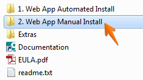
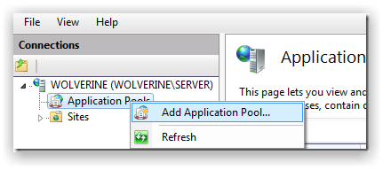
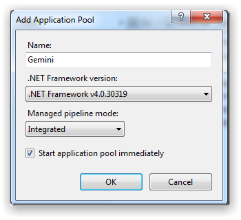
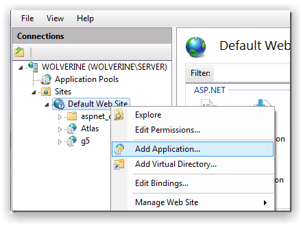
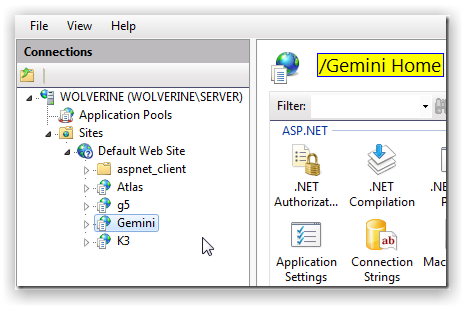
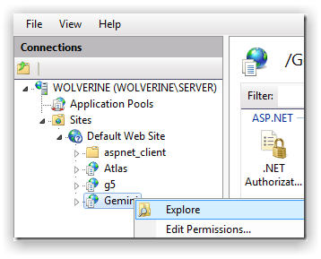
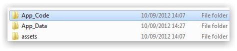

The zip file download contains both the Gemini web application and the sample database to get you going.
The following must be present on your Windows Server. You can choose to have your IIS Web Server and SQL Server on the same machine or each running on different machines.
If you cannot confirm, or do not understand any of the above items, then either contact us or your IT administrator.
If you have not downloaded Gemini, please click here to download the latest release.
Note Right click on the file then select Properties and click Unblock.
Unzip Gemini and open the manual install folder.

Please check here if you have everything ready for the installation process.
Unzip the Gemini zip file and you should see the contents as follows:
First you will need to create an application pool for your site to refer to. In IIS right-click and add an application pool.

Name the application pool. Set the .NET Framework to v4.0 and Managed pipeline mode to Integrated.

In IIS right-click and add Gemini as an Application:

You will need to give your Gemini application a name such as "Gemini". This will mean Gemini will be accessible via http://servername/Gemini.
Select the Gemini application pool:

After the Gemini web application has been created you will see this:

Create a SQL Server database that will be used by Gemini.
It is advisable to use SQL Server 2005/2008/2012 Web, Standard or Enterprise edition. Gemini will also run with SQL Express but it is not recommended for mission critical deployments.
Where possible use SQL authentication and make a note of your SQL Server user credentials (required for next step). Ensure your SQL user has DBO permissions in the new database.
Right-click on the Gemini Web Application in IIS and select the Explore option:

Edit the web.config file and put in the correct SQL Server user credentials:

Save the web.config and Gemini should now be setup.
After installation you can navigate to the Gemini web application using your browser (e.g. http://myserver/gemini).

If you see something like the above, then Gemini has been installed correctly.
Login Credentials Username is "manager" and password is "manager"
For complete administrative control, Gemini requires write access to the following THREE FOLDERS that are located where you installed Gemini:

App_Code folder, select Security tab, allocate Modify/Full Control permissions to the EVERYONE groupApp_Data folder, select Security tab, allocate Modify/Full Control permissions to the EVERYONE groupAssets folder, select Security tab, allocate Modify/Full Control permissions to the EVERYONE groupThe following video will provide you with a brief, rapid overview of manually installing Gemini using the zip file.